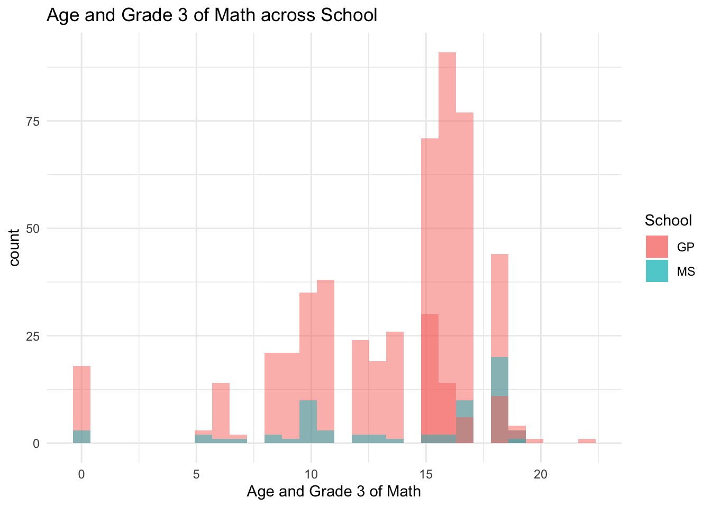
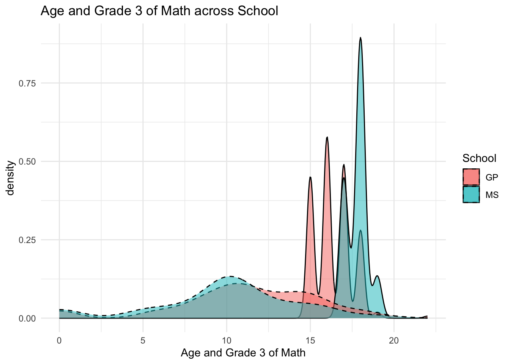
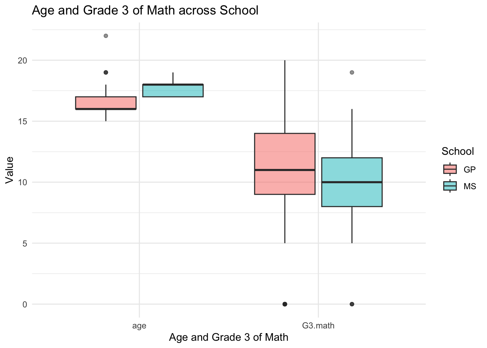

Second, will load and combine the data using functions from tidyverse
Lastly, will convert interesting categorical variables to factors for both math data, Portuguese, and combined data. The four variables I am interested in are
address: student’s home address type (binary: ‘U’ - urban or ‘R’ - rural)
famsize: family size (binary: ‘LE3’ - less or equal to 3 or ‘GT3’ - greater than 3)
Pstatus: parent’s cohabitation status (binary: ‘T’ - living together or ‘A’ - apart)
guardian: student’s guardian (nominal: ‘mother’, ‘father’, or ‘other’)
#Loading in data from local file sourse and combining the 2 dataframesmath_data =read.table("student-mat.csv", sep =";", header =TRUE)por_data =read.table("student-por.csv", sep =";", header =TRUE)combined_data =merge( math_data, por_data,by =c("school","sex","age","address","famsize","Pstatus","Medu","Fedu","Mjob","Fjob","reason","nursery","internet" ))print(nrow(combined_data)) # 382 students
[1] 382
#Loading in the data and combing using functions from the tidyversemath_data2 =read_csv2("student-mat.csv", col_names =TRUE)
ℹ Using "','" as decimal and "'.'" as grouping mark. Use `read_delim()` for more control.
Rows: 395 Columns: 33
── Column specification ────────────────────────────────────────────────────────
Delimiter: ";"
chr (17): school, sex, address, famsize, Pstatus, Mjob, Fjob, reason, guardi...
dbl (16): age, Medu, Fedu, traveltime, studytime, failures, famrel, freetime...
ℹ Use `spec()` to retrieve the full column specification for this data.
ℹ Specify the column types or set `show_col_types = FALSE` to quiet this message.
ℹ Using "','" as decimal and "'.'" as grouping mark. Use `read_delim()` for more control.
Rows: 649 Columns: 33── Column specification ────────────────────────────────────────────────────────
Delimiter: ";"
chr (17): school, sex, address, famsize, Pstatus, Mjob, Fjob, reason, guardi...
dbl (16): age, Medu, Fedu, traveltime, studytime, failures, famrel, freetime...
ℹ Use `spec()` to retrieve the full column specification for this data.
ℹ Specify the column types or set `show_col_types = FALSE` to quiet this message.
Warning in inner_join(math_data2, por_data2, by = c("school", "sex", "age", : Detected an unexpected many-to-many relationship between `x` and `y`.
ℹ Row 79 of `x` matches multiple rows in `y`.
ℹ Row 79 of `y` matches multiple rows in `x`.
ℹ If a many-to-many relationship is expected, set `relationship =
"many-to-many"` to silence this warning.
#Warning: Detected an unexpected many-to-many relationship between `x` and `y`. Looked up this warning and it says it arises when a single row in one dataset can match with multiple rows in the other and vice versa, creating a "many to many" relationship. This can cause duplicate rows or incorrect data combinations - issue is with G1-3 and paid and absences because they are specific to the class#grabbing variable names to copy pastecolnames(math_data)
comb_data3 <-inner_join( math_data2, por_data2,by =c("school","sex","age","address","famsize","Pstatus","Medu","Fedu","Mjob","Fjob","reason","guardian","traveltime","studytime","failures","schoolsup","famsup","activities","nursery","higher","internet","romantic","famrel","freetime","goout","Dalc","Walc","health" ) )#Converting 4 categorical variables to factor variables in each tibble using mutate()math_data2 %>%mutate("famsizeF"=as.factor(famsize),"PstatusF"=as.factor(Pstatus),"guardianF"=as.factor(guardian),"addressF"=as.factor(address),.keep ="unused") -> math_data3por_data2 %>%mutate("famsizeF"=as.factor(famsize),"PstatusF"=as.factor(Pstatus),"guardianF"=as.factor(guardian),"addressF"=as.factor(address),.keep ="unused") -> por_data3comb_data3 %>%mutate("famsizeF"=as.factor(famsize),"PstatusF"=as.factor(Pstatus),"guardianF"=as.factor(guardian),"addressF"=as.factor(address),.keep ="unused") -> comb_data3#printing for display purposesmath_data3
# A tibble: 395 × 33
school sex age Medu Fedu Mjob Fjob reason traveltime studytime
<chr> <chr> <dbl> <dbl> <dbl> <chr> <chr> <chr> <dbl> <dbl>
1 GP F 18 4 4 at_home teacher course 2 2
2 GP F 17 1 1 at_home other course 1 2
3 GP F 15 1 1 at_home other other 1 2
4 GP F 15 4 2 health services home 1 3
5 GP F 16 3 3 other other home 1 2
6 GP M 16 4 3 services other reputa… 1 2
7 GP M 16 2 2 other other home 1 2
8 GP F 17 4 4 other teacher home 2 2
9 GP M 15 3 2 services other home 1 2
10 GP M 15 3 4 other other home 1 2
# ℹ 385 more rows
# ℹ 23 more variables: failures <dbl>, schoolsup <chr>, famsup <chr>,
# paid <chr>, activities <chr>, nursery <chr>, higher <chr>, internet <chr>,
# romantic <chr>, famrel <dbl>, freetime <dbl>, goout <dbl>, Dalc <dbl>,
# Walc <dbl>, health <dbl>, absences <dbl>, G1 <dbl>, G2 <dbl>, G3 <dbl>,
# famsizeF <fct>, PstatusF <fct>, guardianF <fct>, addressF <fct>
por_data3
# A tibble: 649 × 33
school sex age Medu Fedu Mjob Fjob reason traveltime studytime
<chr> <chr> <dbl> <dbl> <dbl> <chr> <chr> <chr> <dbl> <dbl>
1 GP F 18 4 4 at_home teacher course 2 2
2 GP F 17 1 1 at_home other course 1 2
3 GP F 15 1 1 at_home other other 1 2
4 GP F 15 4 2 health services home 1 3
5 GP F 16 3 3 other other home 1 2
6 GP M 16 4 3 services other reputa… 1 2
7 GP M 16 2 2 other other home 1 2
8 GP F 17 4 4 other teacher home 2 2
9 GP M 15 3 2 services other home 1 2
10 GP M 15 3 4 other other home 1 2
# ℹ 639 more rows
# ℹ 23 more variables: failures <dbl>, schoolsup <chr>, famsup <chr>,
# paid <chr>, activities <chr>, nursery <chr>, higher <chr>, internet <chr>,
# romantic <chr>, famrel <dbl>, freetime <dbl>, goout <dbl>, Dalc <dbl>,
# Walc <dbl>, health <dbl>, absences <dbl>, G1 <dbl>, G2 <dbl>, G3 <dbl>,
# famsizeF <fct>, PstatusF <fct>, guardianF <fct>, addressF <fct>
comb_data3
# A tibble: 320 × 38
school sex age Medu Fedu Mjob Fjob reason traveltime studytime
<chr> <chr> <dbl> <dbl> <dbl> <chr> <chr> <chr> <dbl> <dbl>
1 GP F 18 4 4 at_home teacher course 2 2
2 GP F 17 1 1 at_home other course 1 2
3 GP F 15 4 2 health services home 1 3
4 GP F 16 3 3 other other home 1 2
5 GP M 16 4 3 services other reputa… 1 2
6 GP M 16 2 2 other other home 1 2
7 GP F 17 4 4 other teacher home 2 2
8 GP M 15 3 2 services other home 1 2
9 GP M 15 3 4 other other home 1 2
10 GP F 15 4 4 teacher health reputa… 1 2
# ℹ 310 more rows
# ℹ 28 more variables: failures <dbl>, schoolsup <chr>, famsup <chr>,
# paid.x <chr>, activities <chr>, nursery <chr>, higher <chr>,
# internet <chr>, romantic <chr>, famrel <dbl>, freetime <dbl>, goout <dbl>,
# Dalc <dbl>, Walc <dbl>, health <dbl>, absences.x <dbl>, G1.x <dbl>,
# G2.x <dbl>, G3.x <dbl>, paid.y <chr>, absences.y <dbl>, G1.y <dbl>,
# G2.y <dbl>, G3.y <dbl>, famsizeF <fct>, PstatusF <fct>, guardianF <fct>, …
Task 2: Summarizing the data
Here, we will look at how the data is stored to make sure everything makes sense as well as document any missing values. Then, we will perform summaries and graphs on interesting things.
NOTE: With doing psych::describe, I did not use (head) to look at the data- I added it in after the fact to de-clutter the output quarto document a little for grading ease.
#converting some dbl types to characters (categorical vars)comb_data3 %>%mutate("Medu"=as.character(Medu),"Fedu"=as.character(Fedu),"traveltime"=as.character(traveltime),"studytime"=as.character(studytime),"failures"=as.character(failures),"famrel"=as.character(famrel),"freetime"=as.character(freetime),"goout"=as.character(goout),"Dalc"=as.character(Dalc),"Walc"=as.character(Walc),"health"=as.character(health),.keep ="unused") -> comb_data3head(psych::describe(comb_data3))#nothing looks weird here
#Im going to rename the Gs/ paid/abscences for my own benefitcomb_data3 %>%mutate("G1.math"= G1.x,"G1.por"= G1.y,"G2.math"= G2.x,"G2.por"= G2.y,"G3.math"= G3.x,"G3.por"= G3.y,"paid.math"= paid.x,"absences.math"= absences.x,"paid.por"= paid.y,"absences.por"= absences.y,.keep ="unused") -> comb_data3
Task 2 Part 2: Categorical Variables
#one-way tabletable(comb_data3$famsizeF)
GT3 LE3
230 90
#Over double the amount of people with less than or equal to 3 members have >3 family members; 230 have >3 and 90 have <= 3.#two-way tabletable(comb_data3$famsizeF, comb_data3$addressF)
R U
GT3 53 177
LE3 14 76
#Regardless of family size, urban living is more common than rural. Out of the people with families >3 people, 53 live rurally.#three-way tabletable(comb_data3$famsizeF, comb_data3$addressF, comb_data3$PstatusF)
, , = A
R U
GT3 3 13
LE3 2 13
, , = T
R U
GT3 50 164
LE3 12 63
#First observation, significantly more people have parents living together which is nice. Of the people with split parents, 3/16 of those with families >3 people live rurally.#____________________________________________________#conditional two-way tablethreeway <-table(comb_data3$famsizeF, comb_data3$addressF, comb_data3$PstatusF)threeway[, , 2]
R U
GT3 50 164
LE3 12 63
#This gives only the values of family size and address for those with parents that are togethercomb_data3 %>%filter(PstatusF =="T") -> subsetted_mathtable(subsetted_math$famsizeF, subsetted_math$addressF)
R U
GT3 50 164
LE3 12 63
#This gives only the values of family size and address for those with parents that are together#Out of the people with parents together, 12 of the people with less than or equal to 3 family size live rurally.#_____________________________________________________#Two-way contigency table comb_data3 %>%group_by(famsizeF, addressF) %>%summarize(count =n()) %>%pivot_wider(names_from = addressF, values_from = count)
`summarise()` has grouped output by 'famsizeF'. You can override using the
`.groups` argument.
# A tibble: 2 × 3
# Groups: famsizeF [2]
famsizeF R U
<fct> <int> <int>
1 GT3 53 177
2 LE3 14 76
#same output as the two-way table from earlier!#______________________________________________________#Stacked bar plotggplot(comb_data3, aes(x = famsizeF, fill = addressF)) +geom_bar() +labs(x ="Family size: >3 or <=3", y ="Number of participants", title ="Distribution of address with family size among participants") +scale_fill_discrete("Address: Rural or Urban")
#Side-by-side plotggplot(comb_data3, aes(x = famsizeF, fill = addressF)) +geom_bar(position ="dodge") +labs(x ="Family size: >3 or <=3", y ="Number of participants", title ="Distribution of address with family size among participants") +scale_fill_discrete("Address: Rural or Urban")
#Both graphs show that regardless of family size, there are significantly more participants living urbally than rurally. If I ran a statistically test I would bet there's no significant interaction between the two.
Task 2 Part 3: Numeric variables (and across groups)
Numeric variables: age, absences, and the three test grade variables from each data set (math and Portuguese).
Here we will:
find the center and spread for age, absences of the math class, and G1 of the math class.
- Repeat while subsetting the data in a meaningful way.
Find measures of center and spread across a single grouping variable for three of these variables (including a G3 variable as one of them)
Find measures of center and spread across two grouping variables for three of these variables
Create a correlation matrix between all of the numeric variables
#Center and spread for each variable#Agecomb_data3 %>%summarize(mean =mean(age),med =median(age),stddev =sd(age)) -> age#Absences of math classcomb_data3 %>%summarize(mean =mean(absences.math),med =median(absences.math),stddev =sd(absences.math)) -> absences_math#G1 of math classcomb_data3 %>%summarize(mean =mean(G1.math),med =median(G1.math),stddev =sd(G1.math)) -> G1_mathNumSums <-bind_rows(age, absences_math, G1_math) %>%as.data.frame()rownames(NumSums) =c("age", "absences_math", "G1_math")#Repeating while subsetting data to just females#Agecomb_data3 %>%filter(sex =="F") %>%summarize(mean =mean(age),med =median(age),stddev =sd(age)) -> Female_age#Absences of math classcomb_data3 %>%filter(sex =="F") %>%summarize(mean =mean(absences.math),med =median(absences.math),stddev =sd(absences.math)) -> Female_absences_math#G1 of math classcomb_data3 %>%filter(sex =="F") %>%summarize(mean =mean(G1.math),med =median(G1.math),stddev =sd(G1.math)) -> Female_G1_mathNumSumsF <-bind_rows(Female_age, Female_absences_math, Female_G1_math) %>%as.data.frame()rownames(NumSumsF) =c("Fem_age", "Fem_absences_math", "Fem_G1_math")NumSums <-bind_rows(NumSums, NumSumsF)NumSums
mean med stddev
age 16.525000 16 1.141687
absences_math 5.412500 4 7.835205
G1_math 11.290625 11 3.204607
Fem_age 16.632184 17 1.060210
Fem_absences_math 5.781609 4 9.391824
Fem_G1_math 10.873563 10 3.192493
#Looking at all the data, it looks like Absences, regardless of whether its whole class or just females, are very variable. Just females did slightly lower grade wise than both sexes combined. #_________________________________________________________#Find measures of center and spread across a single grouping variable for three of these variablescomb_data3 %>%group_by(sex) %>%summarize(mean =mean(age),med =median(age),stddev =sd(age)) -> age_groupedcomb_data3 %>%group_by(sex) %>%summarize(mean =mean(absences.math),med =median(absences.math),stddev =sd(absences.math)) -> absences_math_groupedcomb_data3 %>%group_by(sex) %>%summarize(mean =mean(G3.math),med =median(G3.math),stddev =sd(G3.math)) -> G3_math_groupedNumSums_Grouped <-bind_rows(age_grouped, absences_math_grouped, G3_math_grouped) %>%as.data.frame()rownames(NumSums_Grouped) =c("ageF","ageM","absences_mathF","absences_mathM","G3F","G3M")NumSums_Grouped
sex mean med stddev
ageF F 16.632184 17 1.060210
ageM M 16.397260 16 1.223220
absences_mathF F 5.781609 4 9.391824
absences_mathM M 4.972603 4 5.427828
G3F F 10.425287 11 4.442652
G3M M 11.773973 12 4.021958
#It looks like females had a slightly higher amount of absences (but variance is very big on those counts) and males performed slightly better on G3. Age is about the same between sexes.#________________________________________________________#Correlation matrix between all numeric variables num_cols <- comb_data3 %>%select(where(is.numeric))correlation_matrix <-cor(num_cols, use ="complete.obs")correlation_matrix
#Noticeable, and probably expected, strong corrrelations are between the 3 G's. There's no strong correlations with age, absences between math and portuguese have a little correlation which makes sense if it's the same student missing both classes.
Next we will do visuals:
Create a histogram, kernel density plot, and boxplot for two of the numeric variables across one of the categorical variables
Create two scatterplots relating a G3 variable to other numeric variables (put G3 on the y-axis).
Repeat the scatter plot step but use faceting to obtain graphs at each setting of another categorical variable.
Repeat the scatter plot step but use faceting to obtain graphs at each combination of two categorical variables
#Histogram of age and G3 across school ggplot(comb_data3, aes(x = age, fill = school)) +geom_histogram(alpha =0.5, position ="identity") +geom_histogram(aes(x = G3.math, fill = school),alpha =0.5,position ="identity") +labs(x ="Age and Grade 3 of Math", fill ="School", title ="Age and Grade 3 of Math across School") +theme_minimal()
`stat_bin()` using `bins = 30`. Pick better value with `binwidth`.
`stat_bin()` using `bins = 30`. Pick better value with `binwidth`.

#There are way more students at GP than MS school. Students at MS had a little more of a linear trend in age, while GP school had more of a normal distribution.#Kernel density plot of age and G3 across schoolggplot(comb_data3, aes(x = age, fill = school)) +geom_density(alpha =0.5) +geom_density(aes(x = G3.math, fill = school),alpha =0.5,linetype ="dashed") +labs(x ="Age and Grade 3 of Math", fill ="School", title ="Age and Grade 3 of Math across School") +theme_minimal()

#This plot is easier to see the seperation of numeric variables in than the histogram. Both schools have a pretty normal distribution of G3, while MS seems to have older students on average than GP.#Boxplot of age and G3 across school#reshaping data to long format comb_long <- comb_data3 %>%pivot_longer(cols =c(age, G3.math),names_to ="variable",values_to ="value" )ggplot(comb_long, aes(x = variable, y = value, fill = school)) +geom_boxplot(alpha =0.5) +labs(x ="Age and Grade 3 of Math",y ="Value",fill ="School",title ="Age and Grade 3 of Math across School") +theme_minimal()

#GP on average looks to have higher Grade 3s than MS. Age is pretty similar with low variance, but the age is slightly higher on average at MS. The outliers in G3 are probably people that dropped out of the class. #----------------------------------------------------------------------------#Scatterplot of G3 as a Y axis and age with sex as a fill ggplot(comb_data3, aes(x = age, y = G3.math, color = sex)) +geom_point() +geom_jitter(width =0.35, opacity =0.3) +labs(x ="Age", y ="Grade 3 of Math Course", title ="Grade 3 of math by age, filled by sex")
#There doesnt seem to be any difference in grades between sexes. There are two outliers, two males are 22 years old.#Scatterplot of G3 as a Y axis and G1 with guardian as a fillggplot(comb_data3, aes(x = G1.math, y = G3.math, color = guardianF)) +geom_point() +geom_jitter(width =0.35, opacity =0.3) +labs(x ="Grade 1 of Math Course", y ="Grade 3 of Math Course", title ="Grade 3 compared to Grade 1 of Math, filled by guardian")
#other than some that maybe dropped the course before getting the third grade, there appears to be a linear relationship, regardless of guardian. #----------------------------------------------------------------------------#Scatterplots with faceting #Scatterplot of G3 as a Y axis and age with sex as a fill and school as a facet wrap ggplot(comb_data3, aes(x = age, y = G3.math, color = sex)) +geom_point() +geom_jitter(width =0.35, opacity =0.3) +labs(x ="Age", y ="Grade 3 of Math Course", title ="Grade 3 of math by age, filled by sex") +facet_wrap(~school)
#GP is much more variable in age, probably just due to having so many more students. There doesnt appear to be any significant differences in grade distributions between the schools here, or by sex in either plot.#Scatterplot of G3 as a Y axis and G1 with guardian as a fill and school as a facet wrapggplot(comb_data3, aes(x = G1.math, y = G3.math, color = guardianF)) +geom_point() +geom_jitter(width =0.35, opacity =0.3) +labs(x ="Grade 1 of Math Course", y ="Grade 3 of Math Course", title ="Grade 3 compared to Grade 1 of Math, filled by guardian") +facet_wrap(~school)
#It looks like both schools have about the same amounts of father vs mother vs other for guardian. There doesnt appear to be any significant differences in grade performance between schools; both follow a linear trend, the better a student did at grade 1 the better they did at grade 3, regardless of school or guardian situation. #----------------------------------------------------------------------------#Scatterplots with faceting two variables #Scatterplot of G3 as a Y axis and age with sex as a fill and school and family size as a facet wrap ggplot(comb_data3, aes(x = age, y = G3.math, color = sex)) +geom_point() +geom_jitter(width =0.35, opacity =0.3) +labs(x ="Age", y ="Grade 3 of Math Course", title ="Grade 3 of math by age, filled by sex") +facet_wrap(school ~ famsizeF)
#Both schools have slightly more students with families of more than 3 people. The students at MS that have less than or eqial to 3 family members look to have the best grade 3 scores out of all the groups- their lowest grade is around 7.5, whilst both family sizes of GP school and the other family size of MS have grade 0s. #Scatterplot of G3 as a Y axis and G1 with guardian as a fill and school and family size as a facet wrapggplot(comb_data3, aes(x = G1.math, y = G3.math, color = guardianF)) +geom_point() +geom_jitter(width =0.35, opacity =0.3) +labs(x ="Grade 1 of Math Course", y ="Grade 3 of Math Course", title ="Grade 3 compared to Grade 1 of Math, filled by guardian") +facet_wrap(school ~ famsizeF)
#All four groups have a very similar linear trend, as G3 increases G1 increases, except that MS school's students with less than or equal to 3 family members dont have any 0 grades. Probably just an artifact